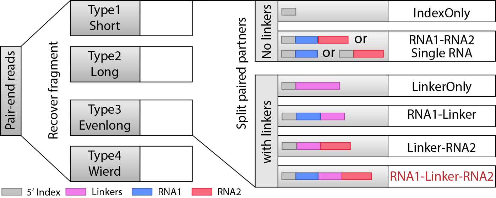

Analysis pipeline¶
Overview¶
The next generation DNA sequencing based technology utilize RNA proximity ligation to transfrom RNA-RNA interactions into chimeric DNAs. Through sequencing and mapping these chimeric DNAs, it is able to achieve high-throughput mapping of nearly entire interaction networks. RNA linkers were introduced to mark the junction of the ligation and help to split the chimeric RNAs into two interacting RNAs. This bioinformatic pipeline is trying to obtain the strong interactions from raw fastq sequencing data. The major steps are:
- Step 1: Remove PCR duplicates.
- Step 2: Split library based on barcode.txt.
- Step 3: Recover fragments for each library.
- Step 4: Split partners and classify different types of fragments.
- Step 5: Align both parts of “Paired” fragment to the genome.
- Step 6: Determine strong interactions.
- Step 7: Visualization of interactions and coverages.
Other functions:
Pipeline¶
Step 1: Remove PCR duplicates.¶
Starting from the raw pair-end sequencing data, PCR duplicates should be removed as the first step if both the 10nt random indexes and the remaining sequences are exactly the same for two pairs. It is achieved by remove_dup_PE.py
usage: remove_dup_PE.py [-h] reads1 reads2
Remove duplicated reads which have same sequences for both forward and reverse
reads. Choose the one appears first.
positional arguments:
reads1 forward input fastq/fasta file
reads2 reverse input fastq/fasta file
optional arguments:
-h, --help show this help message and exit
Library dependency: Bio, itertools
The program will generate two fastq/fasta files after removind PCR duplicates and report how many read pairs has been removed. The output are prefixed with ‘Rm_dupPE’
Note
One pair is considered as a PCR duplicate only when the sequences of both two ends (including the 10nt random index) are the exactly same as any of other pairs.
Step 2: Split library based on barcode.txt.¶
After removing PCR duplicates, the libraries from different samples are separated based on 4nt barcodes in the middle of random indexes (“RRRBBBBRRR”; R: random, B: barcode). It is implemented by split_library_pairend.py
usage: split_library_pairend.py [-h] [-f | -q] [-v] [-b BARCODE]
[-r RANGE [RANGE ...]] [-t] [-m MAX_SCORE]
input1 input2
Example: split_library_pairend.py -q Rm_dupPE_example.F1.fastq
Rm_dupPE_example.R1.fastq -b barcode.txt
positional arguments:
input1 input fastq/fasta file 1 for pairend data (contain
barcodes)
input2 input fastq/fasta file 2 for pairend data
optional arguments:
-h, --help show this help message and exit
-f, --fasta add this option for fasta input file
-q, --fastq add this option for fastq input file
-v, --version show program's version number and exit
-b BARCODE, --barcode BARCODE
barcode file
-r RANGE [RANGE ...], --range RANGE [RANGE ...]
set range for barcode location within reads,default is
full read
-t, --trim trim sequence of 10nt index
-m MAX_SCORE, --max_score MAX_SCORE
max(mismatch+indel) allowed for barcode match,
otherwise move reads into 'unassigned' file
default: 2.
Library dependency: Bio
Here is a example for barcode.txt
ACCT
CCGG
GGCG
The output of this script are several pairs of fastq/fasta files prefixed with the 4nt barcode sequences, together with another pair of fastq/fasta files prefixed with ‘unassigned’.
For example, if the input fastq/fasta files are Rm_dupPE_example.F1.fastq and Rm_dupPE_example.R1.fastq, and the barcode file is the same as above, then the output files are:
- ACCT_Rm_dupPE_example.F1.fastq
- ACCT_Rm_dupPE_example.R1.fastq
- CCGG_Rm_dupPE_example.F1.fastq
- CCGG_Rm_dupPE_example.R1.fastq
- GGCG_Rm_dupPE_example.F1.fastq
- GGCG_Rm_dupPE_example.R1.fastq
- unassigned_Rm_dupPE_example.F1.fastq
- unassigned_Rm_dupPE_example.R1.fastq
Step 3: Recover fragments for each library.¶
After splitting the libraries, the later steps from here (Step 3-7) need to be executed parallelly for each sample.
In this step, we are trying to recover the fragments based on local alignment. The fragments are classifed as several different types as shown in the figure below. The flow chart is also clarified at the top.

We will use a complied program recoverFragment to do that
recoverFragment - recover fragment into 4 different categories from pair-end seq data
=====================================================================================
SYNOPSIS
DESCRIPTION
-h, --help
Displays this help message.
--version
Display version information
-I, --inputs STR
input of forward and reverse fastq file, path of two files separated by SPACE
-p, --primer STR
fasta file contianing two primer sequences
-v, --verbose
print alignment information for each alignment
EXAMPLES
recoverFragment -I read_1.fastq read_2.fastq -p primer.fasta
store fragment using fasta/fastq into 4 output files
'short_*', 'long_*','evenlong_*','wierd_*'
VERSION
recoverFragment version: 0.1
Last update August 2013
Step 4: Split partners and classify different types of fragments.¶
When we recovered the fragments, the next we are goting to do is to find parts that are seprarated by the linkers, and from here, we will be able to classify the fragments into different types: “IndexOnly”, “NoLinker”, “LinkerOnly”, “BackOnly”, “FrontOnly”, “Paired”. (see the figure below).
{kind=link}
This will be done by split_partner.py
usage: split_partner.py [-h] [-e EVALUE] [--linker_db LINKER_DB]
[--blast_path BLAST_PATH] [-o OUTPUT] [-t TRIM]
[-b BATCH] [-l LENGTH]
input type3_1 type3_2
DESCRIPTION: Run BLAST, find linker sequences and split two parts connected by
linkers
positional arguments:
input the input fasta file containing fragment sequences of
type1 and type2
type3_1 read_1 for evenlong (type3) fastq file
type3_2 read_2 for evenlong (type3) fastq file
optional arguments:
-h, --help show this help message and exit
-e EVALUE, --evalue EVALUE
cutoff evalues, only choose alignment with evalue less
than this cutoffs (default: 1e-5).
--linker_db LINKER_DB
BLAST database of linker sequences
--blast_path BLAST_PATH
path for the local blast program
-o OUTPUT, --output OUTPUT
output file containing sequences of two sepatated
parts
-t TRIM, --trim TRIM trim off the first this number of nt as index,
default:10
-b BATCH, --batch BATCH
batch this number of fragments for BLAST at a time.
default: 200000
-r, --release set to allow released criterion for Paired fragment in
Type 3, include those ones with no linker in two reads
-l LENGTH, --length LENGTH
shortest length to be considered for each part of the
pair, default: 15
Library dependency: Bio, itertools
Note
New option added in version 0.3.1, which could allow two different strategies for selection of “Paired” fragments from the Type3 fragments. The --release option will allow a read pair to be called as “Paired” fragment even when the linker are not detected in both reads.
The linker fasta file contain sequences of all linkers
>L1
CTAGTAGCCCATGCAATGCGAGGA
>L2
AGGAGCGTAACGTACCCGATGATC
The output fasta files will be the input file name with different prefix (“NoLinker”, “LinkerOnly”, “BackOnly”, “FrontOnly”, “Paired”) for different types. The other output file specified by -o contains information of aligned linker sequences for each Type1/2 fragment.
For example, if the commend is
split_partner.py fragment_ACCT.fasta evenlong_ACCTRm_dupPE_stitch_seq_1.fastq
evenlong_ACCTRm_dupPE_stitch_seq_2.fastq
-o fragment_ACCT_detail.txt --linker_db linker.fa
- Then, the output files will be:
- backOnly_fragment_ACCT.fasta
- NoLinker_fragment_ACCT.fasta
- frontOnly_fragment_ACCT.fasta
- Paired1_fragment_ACCT.fasta
- Paired2_fragment_ACCT.fasta
- fragment_ACCT_detail.txt
The format of the last output file fragment_ACCT_detail.txt will be “Name | linker_num | linker_loc | Type | linker_order”. Here are two examples:
HWI-ST1001:238:H0NYEADXX:1:1101:10221:1918 L1:2;L2:1 19,41;42,67;68,97 None L2;L1;L1
HWI-ST1001:238:H0NYEADXX:1:1101:4620:2609 L1:2 28,46;47,79 Paired L1;L1
In the first fragment, there are three regions can be aligned to linkers, 2 for L1 and 1 for L2, the order is L2, L1, L1. And they are aligned in region [19,41], [42,67], [68,97] of the fragment. “None” means this fragment is either ‘LinkerOnly’ or ‘IndexOnly’ (in this case it is ‘LinkerOnly’). This fragment won’t be written to any of the output fasta files.
In the second fragment, two regions can be aligned to linkers, and they are both aligned to L1. The two regions are in [28,46], [47,79] of the fragment. the fragment is “Paired” because on both two sides flanking the linker aligned regions, the length is larger than 15nt. The left part will be writen in Paired1_fragment_ACCT.fasta and the right part in Paired2_fragment_ACCT.fasta
Step 5: Align both parts of “Paired” fragment to the genome.¶
In this step, we will use the Paired1* and Paired2* fasta files output from the previous step. The sequences of part1 and part2 are aligned to the mouse genome mm9 with Bowtie and the pairs with both part1 and part2 mappable are selected as output. We also annotate the RNA types of each part in this step. All of these are implemented using script Stitch-seq_Aligner.py.
usage: Stitch-seq_Aligner.py [-h] [-s samtool_path] [-a ANNOTATION]
[-A DB_DETAIL]
miRNA_reads mRNA_reads bowtie_path miRNA_ref
mRNA_ref
Align miRNA-mRNA pairs for Stitch-seq. print the alignable miRNA-mRNA pairs
with coordinates
positional arguments:
part1_reads paired part1 fasta file
part2_reads paired part2 fasta file
bowtie_path path for the bowtie program
part1_ref reference genomic seq for part1
part2_ref reference genomic seq for part2
optional arguments:
-h, --help show this help message and exit
-b, --bowtie2 set to use bowtie2 (--sensitive-local) for alignment,
need to change reference index and bowtie_path
-u, --unique set to only allow unique alignment
-s samtool_path, --samtool_path samtool_path
path for the samtool program
-a ANNOTATION, --annotation ANNOTATION
If specified, include the RNA type annotation for each
aligned pair, need to give bed annotation RNA file
-A DB_DETAIL, --annotationGenebed DB_DETAIL
annotation bed12 file for lincRNA and mRNA with intron
and exon
Library dependency: Bio, pysam, itertools
An annotation file for different types of RNAs in mm9 genome (bed format, ‘all_RNAs-rRNA_repeat.txt.gz’) was included in Data folder. The annotation bed12 file for lincRNA and mRNA (‘Ensembl_mm9.genebed.gz’) was also included in Data folder. One can use the option -a ../Data/all_RNAs-rRNA_repeat.txt.gz -A ../Data/Ensembl_mm9.genebed.gz for annotation.
Here is a example:
Stitch-seq_Aligner.py Paired1_fragment_ACCT.fasta Paired2_fragment_ACCT.fasta
~/Software/bowtie-0.12.7/bowtie mm9 mm9 -s samtools
-a ../Data/all_RNAs-rRNA_repeat.txt.gz -A ../Data/Ensembl_mm9.genebed.gz
> ACCT_fragment_paired_align.txt
The format for the output file ACCT_fragment_paired_align.txt will be:
| [1] | column 10-17 are the same as column 1-8 except they are for part2 instead of part1. |
| [2] | subtype can be intron/exon/utr5/utr3 for lincRNA and mRNA (protein-coding), ‘.’ for others |
Note
Bowtie2 (“–sensitive-local” mode) option is added in version 0.3.1 for the user to choose, the reference index and bowtie_path need to be changed accordingly if you use bowtie2 instead of bowtie. User can also choose unique aligned reads or not by setting --unique option.
Step 6: Determine strong interactions.¶
In this step, we will generate clusters with high coverage separately for all part1 (R1) an part2 (R2) segments. Then based on the pairing information, we count the interactions between clusters from part1 and part2. The strong interactions can be selected by applying a p-value cutoff from hypergeometric test. (See figure below)

We will use the script Select_strongInteraction_pp.py, parallel computing are implemented for clustering parallelly on different chromosomes:
usage: Select_strongInteraction_pp.py [-h] -i INPUT [-M MIN_CLUSTERS]
[-m MIN_INTERACTION] [-p P_VALUE]
[-o OUTPUT] [-P PARALLEL] [-F]
find strong interactions from paired genomic location data
optional arguments:
-h, --help show this help message and exit
-i INPUT, --input INPUT
input file which is the output file of Stitch-seq-
Aligner.py
-M MIN_CLUSTERS, --min_clusterS MIN_CLUSTERS
minimum number of segments allowed in each cluster,
default:5
-m MIN_INTERACTION, --min_interaction MIN_INTERACTION
minimum number of interactions to support a strong
interaction, default:3
-p P_VALUE, --p_value P_VALUE
the p-value based on hypergeometric distribution to
call strong interactions, default: 0.05
-o OUTPUT, --output OUTPUT
specify output file
-P PARALLEL, --parallel PARALLEL
number of workers for parallel computing, default: 5
-F, --FDR Compute FDR if specified
need Scipy for hypergeometric distribution
The input of the script is the output of Step 5 (ACCT_fragment_paired_align.txt in the example). “annotated_bed” class is utilized in this script.
Here is a example:
Select_strongInteraction.py -i ACCT_fragment_paired_align.txt -o ACCT_interaction_clusters.txt
The column description for output file ACCT_interaction_clusters.txt is:
Column Description 1 chromosome name of cluster in part1 2,3 start/end position of cluster in part1 4 RNA type for cluster in part1 5 RNA name for cluster in part1 6 RNA subtype for cluster in part1 7 # of counts for cluster in part1 8-14 Same as 1-7, but for cluster in part2 15 # of interactions between these two clusters 16 log(p-value) of the hypergeometric testing
Step 7: Visualization of interactions and coverages.¶
There are two ways of visulization provided ( LOCAL and GLOBAL ):
Other functions¶
Determine the RNA types of different parts within fragments.¶
Find linker sequences within the library.¶
Find intersections between two different interaction sets.¶
The script tool intersectInteraction.py could be used to identify overlap of interactions between two interaction set from independent experiments (two replicates or treatment v.s. control)
usage: intersectInteraction.py [-h] -a FILEA -b FILEB [-s START] [-n NBASE]
[-o OUTPUT] [-c]
find intersections (overlaps) between two interaction sets
optional arguments:
-h, --help show this help message and exit
-a FILEA, --filea FILEA
file for interaction set a
-b FILEB, --fileb FILEB
file for interaction set b
-s START, --start START
start column number of the second part in each
interaction (0-based), default:7
-n NBASE, --nbase NBASE
number of overlapped nucleotides for each part of
interactions to call intersections, default: 1
-o OUTPUT, --output OUTPUT
specify output file
-p, --pvalue calculate p-values based on 100times permutations
require 'random'&'numpy'&'scipy' module if set '-p'
if “-p” option is set, then the program will do permutation for 100 times by shuffling the two partners of interactions in set a. A p-value will be calculate based on permutation distribution.
RNA structure prediction by adding digestion site information¶
The script will take selfligated chimeric fragments from given snoRNA (ID) and predict secondary structures with and without constraints of digested single strand sites. It is also able to compare the known structure in dot format if the known structure is available and specified by “-a”. The script needs RNAStructure software for structure prediction (“-R”) and and VARNA command line tool for visualization (“-v”).
usage: RNA_structure_prediction.py [-h] [-g GENOMEFA] [-R RNASTRUCTUREEXE]
[-a ACCEPTDOT] [-o OUTPUT]
[-s samtool_path] [-v VARNA]
[-c COLORMAPSTYLE]
ID linkedPair
plot RNA structure with distribution of digested end, refine structure with
loc of digested end
positional arguments:
ID Ensembl gene ID of RNA
linkedPair file for information of linked pairs, which is output
of 'Stitch-seq_Aligner.py'
optional arguments:
-h, --help show this help message and exit
-g GENOMEFA, --genomeFa GENOMEFA
genomic sequence,need to be fadix-ed
-R RNASTRUCTUREEXE, --RNAstructureExe RNASTRUCTUREEXE
folder of RNAstrucutre suite excutable
-a ACCEPTDOT, --acceptDot ACCEPTDOT
accepted structure in dot format, for comparing of
accuracy, no comparison if not set
-o OUTPUT, --output OUTPUT
output distribution of digested sites with dot
structures, can be format of eps, pdf, png,...
-s samtool_path, --samtool_path samtool_path
path for the samtool program
-v VARNA, --varna VARNA
path for the VARNA visualization for RNA
-c COLORMAPSTYLE, --colorMapStyle COLORMAPSTYLE
style of color map, choose from: "red", "blue",
"green", "heat", "energy", and "bw",default:"heat"
Here is a example:
python RNA_structure_prediction.py \
ENSMUSG00000064380 \
/data2/sysbio/UCSD-sequencing/2013-11-27-Bharat_Tri_Shu/Undetermined_indices/Sample_lane8/ACCT_GGCG_combine/ACCT_GGCG_fragment_paired_align_selfLigation.txt \
-a Snora73_real_dot.txt \
-o Snora73_distribution.pdf
Here “Snora73_real_dot.txt” is dot format of known Snora73 structure This will generate three eps files with secondary structures (“Predict”, “Refine”, “Accepted (known)”. Also the output pdf file contains the distribution of digested sites in whole RNA molecule.